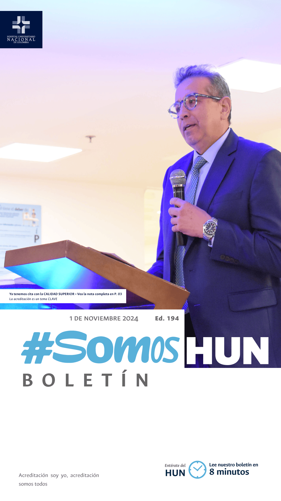
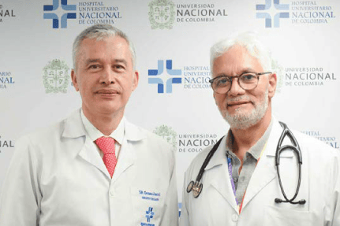
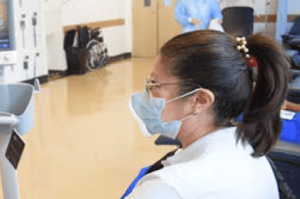

Ver todos los boletinesYa tenemos cita con la
CALIDAD SUPERIOR
Después de 7 años de trabajo hacia la calidad superior, 7 ciclos completos de mejora y 7 ejes que impulsan nuestro quehacer diario, ha llegado el momento de demostrar el mejoramiento continuo de nuestro hospital.Leer más
HUN abre espacio hacia
la Salud Digital
Con la experiencia derivada de TeleUCI Solidaria, en el marco de Conectando la Salud a la Región, proyecto conjunto de la Universidad Nacional de Colombia (UNAL) y el Hospital Universitario Nacional de Colombia (HUN) se dio apertura a HUN DIGITAL, con capacidad para la atención de 7200 pacientes en modelo de telesalud.Leer más

Estándar Clínico Basado en la Evidencia
Diagnóstico, estadificación, tratamiento y seguimiento del paciente adulto con cáncer de colon en el HUN
El cáncer colorrectal es el tercer cáncer más frecuente en hombres y el segundo en mujeres a nivel mundial según las estadísticas del Observatorio global del cáncer (GLOBOCAN) 2020, y se estima que se presentan anualmente alrededor de 900.000 muertes, siendo el segundo cáncer con mayor mortalidad.Leer más
Estándar Clínico Basado en la Evidencia
Prevención y tratamiento del dolor agudo postoperatorio del paciente adulto en el Hospital Universitario Nacional de Colombia
El dolor agudo postoperatorio se define como la experiencia sensorial y emocional desagradable asociada a una lesión real o potencial inmediatamente después de una cirugía o hasta 36 horas posteriores de la misma. Es una condición que desarrollan alrededor del 80 % de los pacientes que son llevados a procedimientos quirúrgicos, con niveles del dolor moderado/grave hasta en el 75 % de éstos y con mejoría del dolor a menos del 50 % una vez instaurado el tratamiento.Leer más
Estándar Clínico Basado en la Evidencia
Diagnóstico y tratamiento del paciente adulto con insuficiencia cardiaca aguda en el HUN
La insuficiencia cardiaca es un síndrome clínico que comprende signos y síntomas secundarios a anormalidades funcionales o estructurales del corazón. Según su temporalidad, la insuficiencia cardiaca puede clasificarse como crónica o aguda. Por su parte, la insuficiencia cardiaca aguda (ICA) se define como la aparición o empeoramiento de signos y síntomas que puede presentarse en pacientes con o sin diagnóstico previo de insuficiencia cardiaca.Leer más

Conoce la caracterización de la
población en el HUN
Conocer a nuestros pacientes es fundamental porque nos permite identificar y comprender sus necesidades específicas de salud e información. Al analizar estos factores demográficos (edad, género, lugar de origen), socioeconómicos, culturales y epidemiológicos de la población atendida, planificamos su atención, asignando adecuadamente personal, tecnología y recursos financieros, asegurando que se adapten a las características de la comunidad atendida, de la misma forma diseñamos estrategias de comunicación y educación en salud, conociendo el nivel de comprensión, los idiomas predominantes y las costumbres de la población.Leer más


AL DÍA
CON EL DIRECCIONAMIENTO
Conoce el cronograma de eventos de la Dirección General del HUN y participa en el avance hacia la visión 2025
Leer más